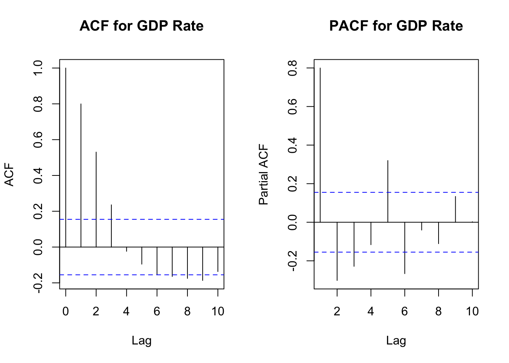
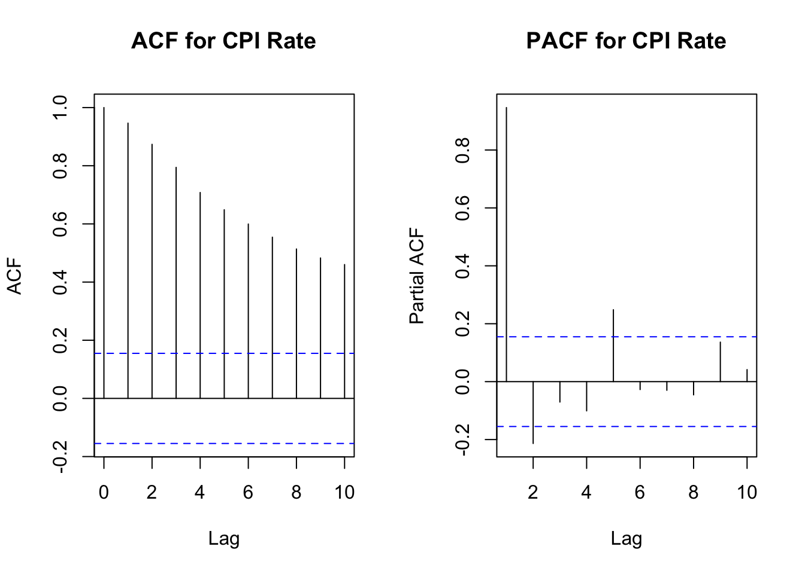
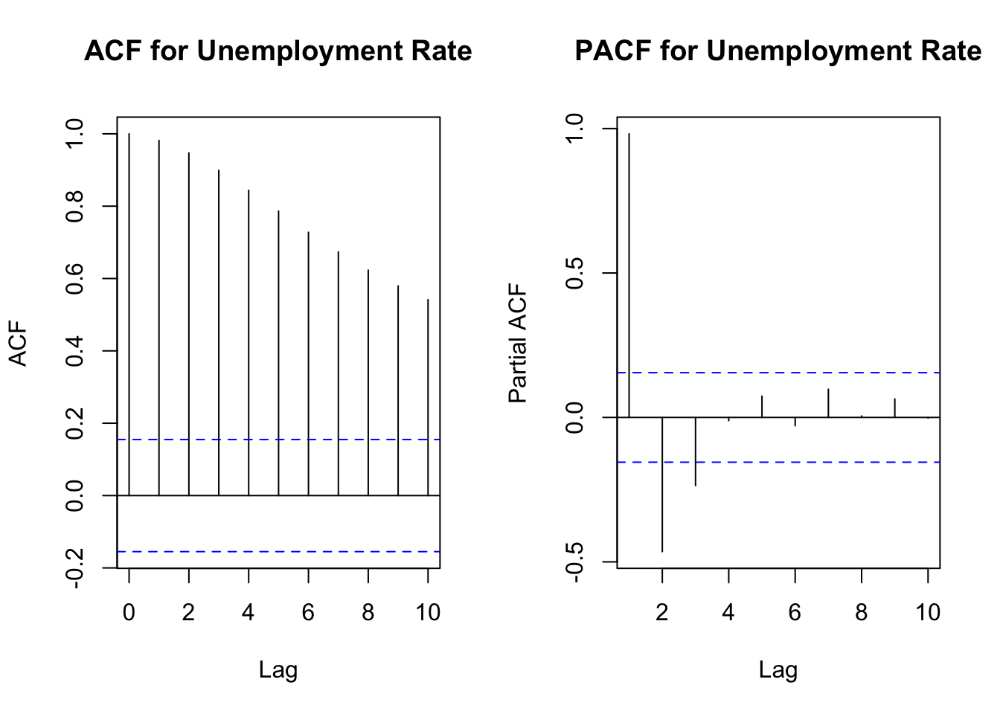
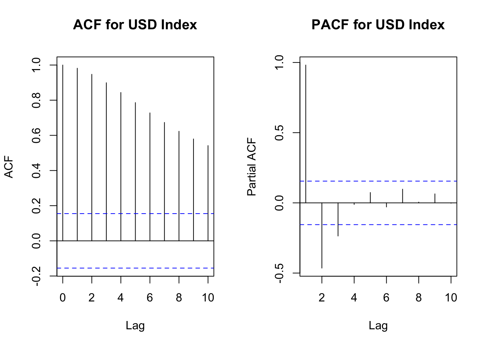
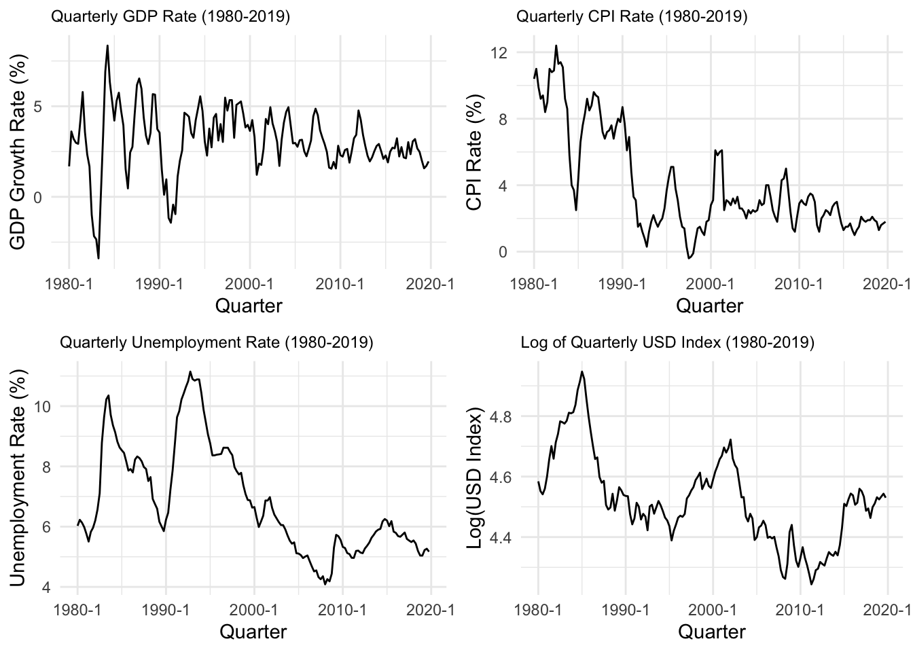

Dixie Effect on Economic Stability in Australia
Abstract. This research project investigates the dynamic effects of the U.S. Dollar (USD) on the Australian economy, with a focus on economic stability. By employing Bayesian Structural Vector Autoregression (SVAR) analysis. This study aims to elucidate the transmission mechanisms of USD fluctuations through three channels: GDP growth, inflation, and unemployment. The findings are expected to provide nuanced insights into the macroeconomic interdependencies between the USD and the Australian economy, offering valuable perspectives for policymakers and economic analysts.
Keywords. Bayesian SVAR, USD, Australian economy, inflation, economic stability
Introduction
This document presents the design and implementation of a Bayesian Structural Vector Autoregression (SVAR) model. Our focus is on understanding the impact of the Trade Weighted Index (TWI) of the USD on Australian economic indicators: unemployment, inflation, and GDP rate.
Research Proposal Structure
The Question, Objective, and Motivation
Objective: To examine the dynamic effects of a weakening USD on the Australian economy, focusing on changes to the GDP, inflation and unemployment.
Research Question: How does a weakening United States Dollar (USD) influence overall economic stability in Australia?
Motivation: The relationship between the USD and the Australian economy is crucial, given the extensive trade links and financial interactions between the two nations. In light of recent global financial uncertainties, understanding this interplay is essential for crafting informed economic policies and strategies. This research endeavors to dissect the complexities of this economic relationship, aiming to provide insights that could inform both policymakers and market participants.
The US dollar trade weighted index or the USD/AUD exchange rate?
Chen J., Naylor, and Lu (2004) explores the impact of exchange rate movements on firm values in New Zealand, suggesting broader macroeconomic implications. Extending this analysis, J. Chen (2024) discusses the U.S. Dollar Index (USDX, DXY, “Dixie”), which measures the U.S. dollar’s strength against a basket of major trading partner currencies. This index is vital for understanding the U.S. dollar’s overall economic health and its global trade competitiveness.
Using the USD Index is preferred over the USD/AUD exchange rate because it provides a more comprehensive view of the US dollar’s strength by comparing it against a basket of currencies from major trading partners. This broader perspective reflects overall trade competitiveness and economic impacts more accurately than the USD/AUD rate, which only measures the exchange value between two currencies. The USD Index, therefore, offers a better gauge of the US dollar’s performance on a global scale, making it more suitable for analyzing its effect on the economic health of the Australian economy.
What is economic stability?
Economic stability indicates a nation’s economy is in a healthy state, characterized by low and stable inflation, allowing for future financial planning without significant loss of purchasing power. It also involves a moderate unemployment rate, ensuring sufficient employment opportunities without causing wage inflation due to a limited labor pool. Additionally, the economy should experience steady growth with minor fluctuations in output, avoiding major booms and busts. Governments and central banks strive to maintain this stability using fiscal policies, such as taxation and spending, and monetary policies, including adjusting interest rates. Achieving economic stability is challenging as it requires maintaining a balance across various economic indicators. This stability is crucial as it enhances business confidence, boosts consumer spending, and supports overall economic health, with metrics like inflation, unemployment, and GDP growth serving as indicators of economic stability.
Effect of a weak US dollar on the Australian economy
A weaker US Dollar Index typically strengthens the Australian dollar, impacting the Australian economy in several ways:
Inflation: A stronger Australian dollar makes exports less competitive and imports cheaper, potentially decreasing export volumes while reducing inflation through lower import costs.
Unemployment: Reduced foreign investment due to a stronger Australian dollar could slow economic growth and potentially increase unemployment if businesses scale back expansion.
GDP Growth: The trade balance may suffer if reduced export revenues outweigh the benefits of cheaper imports, negatively impacting GDP growth.
Data and Their Properties
In order to conduct a thorough analysis of the impact of USD fluctuations on the Australian economy, this study will utilize a set of time-series data that encapsulates three economic indicators:
Growth Rate in the Australian Gross Domestic Product: Quarterly GDP figures representing the overall economic activity within Australia.
Unemployment Rate: Percentage of the labor force that is currently unemployed and actively seeking employment.
Inflation Rate: Measured by the change in the Consumer Price Index (CPI), reflecting the changes in prices for goods and services.
These indicators will be analyzed against one proxy for the strength of the USD dollar as an international currency.
- USD Trade Weighted Index: monthly index of US dollar major currency trade-weighted index.
Motivation for Data Choice:
The selected variables offer a detailed insight into the economic interactions between the US dollar and the Australian economy, focusing on how trade-weighted indices affect the competitiveness of Australian goods and services internationally. Changes in the US dollar’s strength can significantly impact Australia’s GDP growth, given the substantial trade relations with the United States. Additionally, fluctuations in this index are likely to alter inflation and unemployment rates, key indicators of economic stability that affect purchasing power and consumer spending. This comprehensive approach enables a thorough examination of the international economic dynamics and the overall stability of the Australian economy.
Data Acquisition and Transformation:
The project will analyze data from 1980 to 2019 sourced from official Australian databases, particularly the Reserve Bank of Australia, focusing on the effects of a weakening USD on the Australian economy. Data from before 1980 and post-2019 are excluded due to their irrelevance to current trade relations and distortions from the COVID-19 crisis, respectively. The analysis will use time series data at different frequencies within a Bayesian Structural Vector Autoregression (SVAR) model, requiring preprocessing to match data frequencies.
For our purposes in this initial proposal, the required data will be sourced from official Australian government databases using the readrba R packages. Based on the preliminary results from the project, it might become necessary to entertain a mixed frequency approach.
The first series, the year-end Australian real GDP growth rate, is from the Reserve Bank of Australia (RBA) output and labour statistical tables (Reserve Bank of Australia 2024c). This is a quarterly series, and will not need to be treated for frequency alignment.
As seen in Figure 1, the PACF above, the optimal lag for conducting the augmented Dicky-Fuller (DF) test is 4. A summary of the results of this test can be found in the table below.
Note that the augmented DF test suggests that the series is stationary at the 95% level. There is no need to modify the series. From the DF test results, its is safe to conclude that the GDP_rate series is stationary.
The second series, the year-end change in Australian inflation rate, is from the Reserve Bank of Australia (RBA) inflation and inflation expectations statistical tables (Reserve Bank of Australia (2024d)). This series has been converted from a monthly series into a quarterly series by choosing the relevant months for the beginning of each quarter, starting from March and ending with December.

From Figure 2, an augmented DF test was conducted with 3 lags. Note that the augmented DF test (see appendix) suggests that the series is not stationary at the 95% confidence level. There was a need to take the difference of the series.
The third series, the Australian unemployment rate, is from the Reserve Bank of Australia (RBA) output and labour Statistical tables (Reserve Bank of Australia 2024b). This is a monthly series. The series was converted into a quarterly series by choosing the relevant months for the beginning of each quarter, starting from March and ending with December.

Figure 3 above explains that a lag 4 should be used for the augmented DF test. Note that this test (see Appendix) suggests that the series is not stationary at the 95% confidence level. We therefore use the differenced series.
The fourth series, the USD Index, is also from the Reserve Bank of Australia (RBA) exchange rates statistical tables (Reserve Bank of Australia 2024a). This is a monthly series. The series was converted into a quarterly series by choosing the relevant months for the beginning of each quarter, starting from March and ending with December.

Figure 4 above indicates that a lag 4 should be used for the augmented DF test. The results suggest that the series is not stationary at the 95% confidence level. We therefore use the differenced series.
Augmented Dicky-Fuller test results for the USD Index
| Variable | Test_Statistic | Critical_Value_5pct | |
|---|---|---|---|
| GDP | GDP | -3.872311 | -2.88 |
| CPI | CPI | -2.178294 | -2.88 |
| Unemployment | Unemployment | -1.927413 | -2.88 |
| USD_Index | USD_Index | -2.194568 | -2.88 |
The four treated series for the proposed model are in Figure 5 below. All these series are now reflecting change (rates) in the underlying economic indicator.

Model Specification
The above selection and treatment of the data is pivotal to answering the research question: How does a weakening United States Dollar (USD) influence overall economic stability in Australia? By focusing on key economic indicators like the GDP growth rate, unemployment rate, and inflation rate, and comparing these against the USD Trade Weighted Index (TWI), the study strategically addresses the multifaceted impact of USD fluctuations on the Australian economy. The chosen data encapsulate the essential aspects of economic stability, allowing for a nuanced analysis of the interdependencies between the USD’s value and Australian economic health.
This approach is vital for constructing a comprehensive Bayesian Structural Vector Autoregression (SVAR) model. The SVAR model, designed to elucidate the transmission mechanisms of USD fluctuations, relies on accurate, time-aligned, and contextually relevant data to provide meaningful insights. By ensuring the data are stationary and appropriately preprocessed for the chosen analysis timeframe (1980-2019), excluding periods of atypical economic disruption like the COVID-19 crisis, the document ensures that the model’s outputs are reflective of standard economic interactions, enhancing the reliability of the findings.
Furthermore, the data treatment, including the conversion of series to quarterly frequencies and addressing stationarity, directly informs the model equations by ensuring that the inputs reflect genuine economic trends devoid of seasonal or non-stationary noise. This data preparation not only strengthens the study’s methodological framework but also ensures that the SVAR model’s findings will offer actionable insights, enabling policymakers and analysts to base decisions on solid empirical evidence, thereby underlining the importance of investigating the specified problem.
Next, we employ a Bayesian Structural Vector Autoregression (SVAR) model to understand the dynamic relationships among various economic indicators influenced by fluctuations in the United States Dollar (USD) against the Australian Dollar (AUD) (Woźniak 2022). In particular, we follow Bhuiyan (2012) who introduces a Bayesian structural VAR model tailored for Canada, focusing on evaluating the impact of monetary policy shocks, utilizing the overnight rate target as the main policy tool. However, our model differs in that it does not directly account for any fiscal and monetary policy, rather it evaluates the potential of using the US Index to predict the stability of the Australian economy.
Justification for the Selection of the Bayesian SVAR Model
In addressing the dynamics between the United States Dollar (USD) and the Australian economy, we opt for a Bayesian Structural Vector Autoregression (SVAR) model over alternative econometric methodologies for several reasons. Firstly, the SVAR model allows us to incorporate prior knowledge and uncertainties into our analysis, an advantage not readily available in traditional VAR models. This Bayesian approach is particularly beneficial in economic studies where historical data and expert judgment play crucial roles in shaping analysis and expectations.
Furthermore, SVAR models enable us to decipher the structural impacts of economic shocks, such as fluctuations in the USD, on various indicators of economic stability within Australia, including GDP growth, inflation, and unemployment rates. Unlike standard VAR models that treat all innovations as endogenously generated within the system, SVAR models allow us to impose structural restrictions based on economic theory. This is critical for understanding the directionality and magnitude of relationships between variables, thereby offering a more nuanced analysis of economic interdependencies.
Interpretation of the \(A\) Matrix in the Bayesian SVAR Model
In our Bayesian SVAR model, the matrix \(A\) is pivotal as it encapsulates the contemporaneous relationships between the endogenous variables. Each entry \(a_{ij}\) in the \(A\) matrix can be interpreted as the immediate impact of a one-unit shock in variable \(j\) on variable \(i\) within the same time period, holding all other factors constant. This interpretation allows us to understand the intricate web of interactions within the economic system, such as how a sudden change in the USD Index might immediately affect Australia’s GDP growth, inflation, or unemployment rate.
For instance, a positive entry in the row of the GDP growth and in the column of the USD Index would indicate that an instantaneous increase in the USD Index (reflecting a strengthening of the USD) has a positive impact on Australian GDP growth within the same period. Such insights are invaluable for policymakers and analysts seeking to anticipate and mitigate the effects of international monetary fluctuations on domestic economic stability.
This is a 4x1 vector of endogenous variables at time t, where:
- \(USD\_Index\) : Trade Weighted Index of the US Dollar.
- \(Unemployment\_rate\) : unemployment rate.
- \(Inflation\_rate\) : inflation rate.
- \(GDP\_growth\) : growth rate of GDP.
The SVAR model structure:
- \(A\) is a 4X4 matrix representing the contemporaneous relationships between the variables.
- \(B_i\) (for i = 0,1,…,p) are 4x4 matrices representing the lagged effects (where p is the lag order).
- \(\epsilon_t\) is a 4x1 vector of errors.
\[ Y_t = \begin{bmatrix} USD\_Index_t \\ Unemployment\_rate_t\\ Inflation\_rate_t \\ GDP\_growth_t \end{bmatrix} \]
The Bayesian Structural VAR model can then be written as:
\[ AY_t = B_0 + B_1Y_{t-1} + ... + B_pY_{t-p} + \epsilon_t \]
Model Notations:
\(Y_t\): This represents the vector of endogenous variables at time tt. In this context, the vector consists of the Trade Weighted Index of the US Dollar (USD_Index), the unemployment rate, the inflation rate, and the GDP growth rate. These variables are chosen because they represent key indicators of economic stability.
\(A\): This is a matrix representing the contemporaneous relationships between the variables in \(Y_t\). In an SVAR model, this matrix helps to understand how shocks to one variable (e.g., USD_Index) can contemporaneously affect other variables (e.g., unemployment, inflation, GDP growth).
\(B_i\) (for i=0,1,…,pi=0,1,…,p): These are matrices representing the lagged effects of the variables on each other. The subscript ii represents the lag order, showing how past values (lags) of each variable in \(Y_t\) influence the current values. In time series analysis, this captures dynamics such as how past economic conditions influence current outcomes.
\(ϵ_t\): This is the vector of errors or shocks at time tt. In the SVAR framework, these are considered unobservable random shocks that affect the endogenous variables. In Bayesian SVAR models, these shocks are also subjected to prior distributions reflecting our beliefs or assumptions before observing the data.
Using the Model to Answer the Research Question:
The model will be used to analyze how fluctuations in the US Trade Weighted Index (representing a weakening or strengthening USD) impact the Australian economy’s stability, specifically through GDP growth, inflation, and unemployment rates. By examining the contemporaneous and lagged relationships between these variables, we can understand the transmission mechanisms of US dollar fluctuations.
To address the research objectives, we will assess the dynamic effects of the USD_Index on Australia’s economic indicators. This involves looking at the impulse response functions (IRFs) and variance decompositions derived from the SVAR model. The IRFs will show how a shock to the US dollar index impacts Australian GDP growth, inflation, and unemployment over time. This directly speaks to the study’s aim to elucidate the transmission mechanisms of such fluctuations.
In addition, to enhance our understanding of the dynamic relationships among economic indicators and the USD Index, we will incorporate an analysis of Granger causality (see Kirchgässner and Walters (2007), pp. 93-123). This addition aims to rigorously test the directional influence between the USD Index and key Australian economic metrics: inflation, unemployment, and GDP growth. To implement this, we propose extending the Bayesian Structural Vector Autoregression (SVAR) model to include Granger causality tests. These tests will determine whether past values of the USD Index can predict future values of Australian inflation, unemployment, and GDP growth, beyond the predictions based on past values of these Australian indicators themselves.
This analysis will be conducted using a stepwise approach:
Lag Selection: Optimal lags for the variables will be determined based on information criteria such as AIC or BIC within the Bayesian framework.
Model Estimation: The extended SVAR model, incorporating the selected lags, will be estimated to analyze the interactions between the USD Index and Australian economic indicators.
Granger Causality Tests: We will perform Bayesian Granger causality tests within the context of the SVAR model to investigate if the USD Index has a predictive power over Australian inflation, unemployment, and GDP growth rates.
The addition of Granger causality analysis will provide a more nuanced understanding of how changes in the USD Index might precede alterations in Australia’s economic conditions. This could be particularly insightful for policymakers, providing evidence on whether movements in the USD Index could serve as a leading indicator for shifts in economic stability within Australia.
By integrating this causality testing into our model, we aim to offer more comprehensive insights into the interdependencies between international currency movements and domestic economic health. This approach will help in clarifying the temporal precedence and potential predictive relationships, thereby enriching the findings and implications of our research on the impacts of the USD’s strength on Australian economic stability.
Estimation Outputs for Interpreting the Research Question:
Posterior Distributions: These reflect the updated beliefs about the model’s parameters after considering the data. We would examine the posterior distributions of the SVAR model parameters, particularly focusing on the coefficients that measure the impact of USD_Index changes on the economic indicators.
Impulse Response Functions (IRFs): IRFs trace the effects of a one-time shock to one of the innovations on the current and future values of the endogenous variables. By analyzing the IRFs, we can interpret how an unexpected change in the US dollar’s value affects Australian economic conditions over time.
Variance Decompositions: These help us understand the proportion of the forecast variance of each endogenous variable that can be attributed to shocks to each variable in the model, including shocks to the USD_Index. This is crucial for assessing the significance of US dollar fluctuations compared to other domestic factors.
Credibility Intervals: Unlike classical confidence intervals, credibility intervals in Bayesian analysis offer a probability statement about the parameter values. Examining these intervals for the effects of interest will provide insights into the certainty of our estimates.
In terms of economic context, understanding the relationship between the US dollar index and Australian economic indicators is vital for policymakers and economic analysts, especially considering the significant trade and financial ties between the two countries. The model helps address the research objectives by providing a structured way to quantify these relationships, thereby informing decisions that could enhance economic stability in response to international currency movements.
References
Bhuiyan, R. 2012. “Monetary Transmission Mechanisms in a Small Open Economy: A Bayesian Structural VAR Approach.” Canadian Journal of Economics 45 (3): 1037–61.
Chen, J. 2024. “What Is the u.s. Dollar Index (USDX) and How to Trade It.” Investopedia. 2024. https://www.investopedia.com/terms/u/usdx.asp.
Chen, J., M. Naylor, and X. Lu. 2004. “Some Insights into the Foreign Exchange Pricing Puzzle: Evidence from a Small Open Economy.” Pacific-Basin Finance Journal 12 (1): 41–64.
Kirchgässner, G., and J. Walters. 2007. Introduction to Modern Time Series Analysis. Springer.
Reserve Bank of Australia. 2024a. “F12 Table, Exchange Rates, Series ID FUSXRTWI.” https://www.rba.gov.au/statistics/tables/. 2024.
———. 2024b. “G1 Table, Infaltion and Inflation Expectations, Series ID GCPIAGYP.” https://www.rba.gov.au/statistics/tables/. 2024.
———. 2024c. “H1 Table, GDP Growth Rate, Series ID GGDPCVGDPY.” https://www.rba.gov.au/statistics/tables/. 2024.
———. 2024d. “H5 Table, Labour Force, Series ID GLFSUPSA.” https://www.rba.gov.au/statistics/tables/. 2024.
Woźniak, Tomasz. 2022. Bsvars: Bayesian Estimation of Structural Vector Autoregressive Models. R Package. https://cran.r-project.org/package=bsvars.